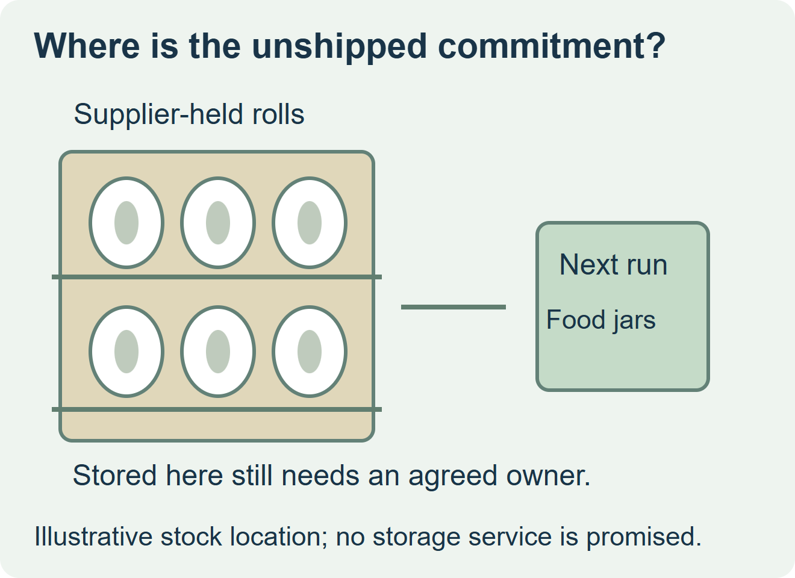
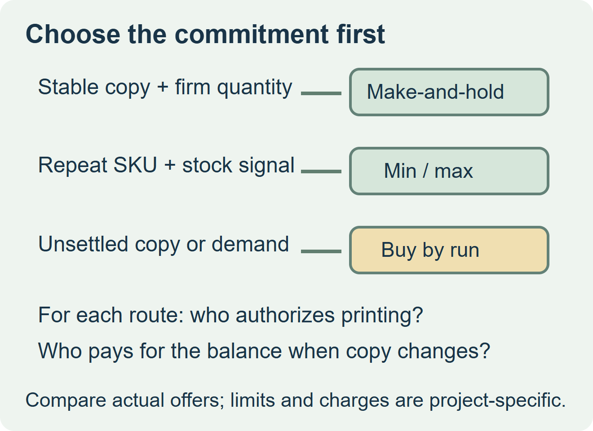

Ask for make-and-hold when you can commit to a defined quantity of stable artwork. Compare min/max replenishment when the SKU repeats but usage varies and both parties can maintain a dependable stock signal. Buy by packing run when the design or demand remains too uncertain for either commitment. Supplier-held stock can free space at your site while leaving a purchase obligation elsewhere. Establish that obligation before comparing the price per label.


Separate a printing decision from a delivery decision
A fixed finished order can be printed once and delivered in parts. A replenishment program can also create new finished stock after earlier releases have left the supplier. Those are different buying commitments even if both proposals say that labels will be available when requested. Ask what event authorizes printing, what quantity it authorizes, and when the buyer becomes liable for that quantity.
Resource Label Group describes make-and-hold and min/max as two contractual inventory approaches. In its example, make-and-hold produces an agreed period’s requirements for later release; min/max production maintains stock within agreed bounds. These are examples of another supplier’s programs, not confirmation that ZFU offers warehousing, automatic replenishment or the same terms. Resource Label Group inventory-program brochure
| Your planning condition | Route to request first | Commitment to resolve |
|---|---|---|
| Stable artwork and a quantity you are prepared to purchase | One defined make-and-hold order | Total printed balance, holding period and responsibility for unused stock |
| Repeat SKU, usable consumption records and variable release sizes | A proposed min/max program | Stock definition, trigger, refill quantity, authorization and maximum exposure |
| New recipe, unsettled copy or unproven demand | Separate run-based orders | Actual setup costs, minimums and supply timing for each run |


Define what the stock signal includes
For a replenishment proposal, name the SKU, component and revision to which each minimum and maximum applies. Ask whether the signal uses available finished stock, reservations, dispatched stock or stock at your co-packer. A roll on quality hold should remain visible but must not silently count as unrestricted supply. Decide how an open production order is included so one low-stock message does not trigger two replacements.
Keep consumption and forecast changes separate. A promotion that increases next month’s forecast does not prove that the additional labels have already been consumed. Agree who can change the limits and who approves a replacement run. There is no universal minimum, maximum or reorder quantity appropriate to every food label.
Compare the entire obligation on the same basis
Request the price and terms for printing, storage, each release, delivery and any unused balance. Ask when invoicing occurs and what happens at the end of the agreement. Keep label aging and artwork obsolescence in the comparison: stock can remain physically sound while its ingredient copy is no longer authorized. A promise to deliver later does not restart the material’s applicable storage or best-use clock.
For a hypothetical sauce brand, the established core SKU may suit a defined held quantity while a new seasonal flavor remains on smaller separate orders. If the recipe changes, stop further replenishment against the affected revision and identify already printed and in-process quantities before approving the replacement. The example illustrates a decision; it assumes no order size, saving or delivery guarantee.
Write the stop rule before the first release
The useful worksheet has separate lines for the amount committed, amount printed, amount released, stock still held, open replenishment and each revision’s status. Add the person authorized to stop or restart production. Once those terms are agreed, use the split-delivery schedule for addresses, dates and allocations. That schedule implements the supply decision; it cannot define the commercial commitment by itself.
Discuss the unresolved label requirement
Send the label specification and revision, quantity by SKU, dated usage history or a clearly marked forecast, likely artwork changes, release destinations and the purchase commitment you can accept. Review food label options and prepare a label specification inquiry. The contact page opens an email draft and lists email or WhatsApp for attachments. Supply, proof options, testing, pricing and timing require project confirmation.